内在人格とは
内在人格とは、キャラに追加能力を与えることができ、与え方によって様々な特徴を持つことができる。マルチ戦やランク戦で遊ぶ前に必ず人格を採用して戦いましょう！！
内在人格の基本
最大で130ポイントを振り分けることができ、人格ツリーから自由に構成できます。
内在人格解説（サバイバー編）
上下左右に分けて解説していきます！！強さによって色を分けていくのでぜひ参考にしてください。「フライホイール効果」・「中治り」・「危機一髪」・「膝蓋腱反射」は強すぎるためどれか2つまでしか取れないので注意！
⬆ 上人格（解読・補助系）
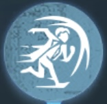
フライホイール効果
| 効果 | アクティブスキル：前方3.5mにダッシュ、0.4秒間無敵 |
|---|---|
| CT | 135秒（開始時：50秒） |
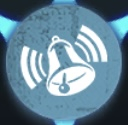
群集心理
| CT | 80秒 |
|---|---|
| 効果 |
ハンターに5秒以上持続追撃され警戒範囲外に出ると、全サバイバーに3秒間ハンターを強調表示させる ※40秒以内の再発動なし |
転禍為福
| 効果 | 暗号機の解読調整に失敗した時、ハンターの位置を3/5/7秒間強調表示 |
|---|
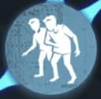
一蓮托生
| 効果 | 18m以内にいるサバイバーと、ハンターに追撃されていない負傷中のサバイバーを互いに強調表示 |
|---|
生存者の本能
| 効果 | 1/2/3名のサバイバーが脱落した時、自身の解読速度が6% / 18% / 36% アップ |
|---|
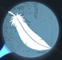
雲の中で散歩
| 効果 | 足跡の持続時間が1秒減少、負傷状態で破片痕跡が表示されない |
|---|
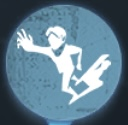
共生効果
| 効果 | ロケットチェアに拘束されたサバイバーに向かう時、移動速度が6〜10%上昇（距離に応じて変動） |
|---|
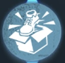
ウェーバーの法則
| 効果 |
試合中1度限り、ハンターに18m以内で3秒以上追撃されると 3.5秒間移動速度が10 / 15 / 20% 上昇 |
|---|
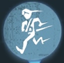
防衛反応
| 効果 | 負傷状態の間、板・窓の操作速度が 6% / 9% / 12% 上昇 |
|---|

癒合
| 効果 |
治療時間を15%短縮。 負傷中は1秒ごとに治療進捗が 0.2% / 0.4% / 0.6%自動で増加（最大 20% / 40% / 60%） |
|---|
⬇ 下人格（救助職）
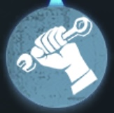
危機一髪
| 効果 |
試合中1回限り自動発動。 救助成功時、自身と救助された味方が20秒間ダウン無効状態となり、 受けたダメージは効果終了後にまとめて適用。 |
|---|
鳥籠効果
| 効果 |
自身と他サバイバーが地下室にいる場合、 移動速度 +10%、被攻撃加速 +20%（階段を踏んだ時点で発動） |
|---|
かすかな音
| 効果 |
サバイバーが拘束されているロケットチェアの半径22m以内では、 自身の足跡が残らなくなる。 |
|---|
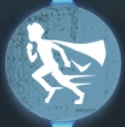
救世主妄想
| 効果 |
仲間をロケットチェアから救助すると、 自身の移動速度が3秒間 5% / 10% / 15%上昇。 |
|---|
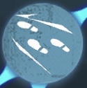
カタルシス効果
| 効果 | 被攻撃時の加速時間 +0.3秒延長 |
|---|
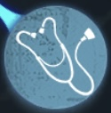
医師
| 効果 | 自己治癒および仲間への治療速度が 15% / 20% / 25% 上昇 |
|---|

避難所
| 効果 |
ロケットチェア救助時に ダウン時の自己治癒速度・治療を受ける速度 +8% / +16% / +24% 最大2回まで重ねがけ可能（効果は永続） |
|---|
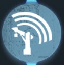
集団心理
| 効果 |
ロケットチェア拘束中のサバイバーの 半径12/18/24m以内で移動速度 +4/6/8% |
|---|
寒気
| 効果 |
36m以内でハンターが背後から見ていると ハンターの方向が継続表示される |
|---|
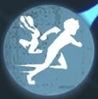
共感
| 効果 |
クールタイム：30秒 サバイバーがダウンした時、6秒間移動速度が20%上昇 ※16m以内にハンターがいる or ダウン状態でなくなると効果終了 |
|---|
⬅ 左人格（チェイス）

膝蓋腱反射
| 効果 |
1.
窓を乗り越えた後、移動速度+50%（3秒間） 2. 板を乗り越えた後、移動速度+50%（3秒間） ※それぞれクールタイム40秒、別管理 ※ハンターが警戒範囲内にいない場合は25%に減少 加速終了後、ハンターの警戒範囲内にいる場合、さらに４秒間移動速度が８%増加する。 |
|---|
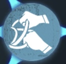
火中の栗
| 効果 | ロケットチェアからの救出速度が40%上昇 |
|---|
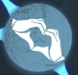
起死回生
| 効果 | ダウン中、自己治療により負傷状態で復帰可能（ゲーム中1度だけ発動） |
|---|
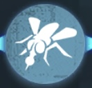
尻に火
| 効果 | ハンターが12m以内に8秒間いると、板を倒す速度が8/14/20%上昇 |
|---|
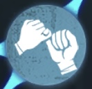
囚人ジレンマ
| 効果 | 味方が風船に縛られている時、ハンターと味方の位置を5秒間強調表示。チェア拘束で効果解除。 |
|---|

感覚順応
| 効果 |
クールタイム:16秒 16m以内でハンターが板破壊や窓乗り越えを行うと、ハンターを7秒間強調表示。 |
|---|
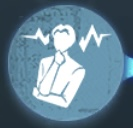
孵化効果
| 効果 |
解読加速段階開始後、非解読状態のサバイバーの解読速度が1秒ごとに1%増加。最大12%まで。 解読開始10秒後、または解読状態から離脱すると解除。 |
|---|
生存者の本能や観客効果より条件が緩く、腐りにくい。
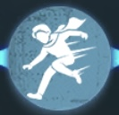
マッスルメモリー
| クールタイム | 25秒 |
|---|---|
| 効果 | 木の板と窓を乗り越える速度が5%/10%/15%上昇。 |
クールタイム管理が重要で、膝蓋腱反射との相性も良い。
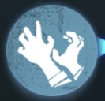
生存の意志
| 効果 | 風船状態時の抵抗速度が10%/15%/20%上昇。 |
|---|
もがけた場合の戦況の傾きが大きいためワンチャンスを狙うのにもってこい。
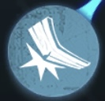
怪力
| 効果 | ハンターを板倒しによって気絶させた時のスタン時間が10%/15%/20%上昇。 |
|---|
板間でハンターをとどまらせる小説家や画家とも好相性。
➡ 右人格（通電補佐、補佐）
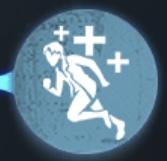
中治り
| 効果 | 脱出ゲートが開くと同時に、ロケットチェア拘束以外のサバイバーが体力1回復し、5秒間移動速度が50%上昇。 |
|---|
全員が持つことで、寸止め時の全体負荷でも救助が可能となり、通電前の選択肢が増える。
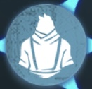
好奇心
| 効果 |
サバイバーが自由行動中で解読していない場合、最も近くの未完了暗号機のシルエットが表示される。 暗号機残り3台になると、残りの暗号機全てが5秒間表示される。 |
|---|
残り1台時に全暗号機の場所を再確認できるのも強み。
暗号機の強調は壁越しでないと表示されず、近すぎても表示されないので注意が必要。

気が散る
| 効果 | 脱出ゲートが開ける状態になると40秒ごとに5秒間ハンターを強調表示する。 |
|---|
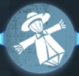
不撓不屈
| 効果 |
ダウン時の自己治療速度10/15/20%上昇。 ダウン時の移動速度30/60/90%上昇。 |
|---|
特に治療デバフのある傭兵と相性が良く、アンデッド対策としても有効。
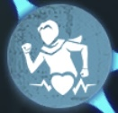
テレパシー
| 効果 | 脱出ゲートが開ける状態になると、40秒経過するごとに他のサバイバーを5秒間強調表示する。 |
|---|
次のピア効果を取得するためにもセットで選ばれやすい。
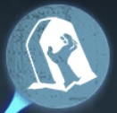
うたた寝
| 効果 | 自身のロケットチェアの発射速度が3/6/9%低下する。 |
|---|

接触効果
| 効果 |
自身または仲間の治療が成功した時、治療を受けた対象の移動速度が即座に16%/28%/40%上昇。1.5秒間持続。 追撃状態ではない場合、加速時間がさらに3秒延長される。 |
|---|
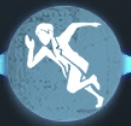
逃避
| 効果 | 脱出ゲートが開ける状態になると、120秒間移動速度が3/4/5%上昇する。 |
|---|
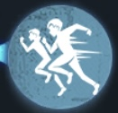
ピア効果
| 効果 | 味方のサバイバーにロケットチェアから救助されると、自分の移動速度が2秒間28%上昇する。 |
|---|

観客効果
| 効果 |
2台の暗号機の解読が完了すると、この効果はその対戦中無効になる。 他のサバイバーがロケットチェアに拘束された後、自身の解読速度が10%上昇する。 |
|---|
まとめ
サバイバーの内在人格は、それぞれの役割や立ち回りに合わせて自由に組み合わせられる重要な要素です。 この記事で紹介した人格を参考に、自分のプレイスタイルに最適な構成を見つけてください！
🎯 重要ポイント
- フライホイール効果・中治り・危機一髪・膝蓋腱反射などの強人格は2つまでしか選べない制限に注意
- キャラクターの特性に合わせた人格構成で、立ち回り効率を最大化できる
- 初心者はまず中治りを優先的に取得すると安定しやすい
実践のコツ
人格構成に正解はありません。 マルチ戦・ランク戦で試しながら、自分が強く感じる組み合わせを見つけることが上達への近道です。 チーム全体のバランスも意識して人格構成を選びましょう！

ハンター編も見る
サバイバーとは違う視点で戦うハンター人格について、詳しく解説しています。
ハンター内在人格完全解説を見る
みんなのコメント
まだコメントはありません。最初のコメントを書いてみませんか？